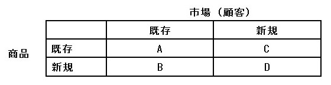

| 陸王から学ぶ新規事業の立ち上げと実行プロセス | |
| 奥村 政治 | |
| (2019) | |
TBS日曜劇場「陸王」は、中小企業（実態は小規模企業）が新規事業を立ち上げて、紆余曲折の末に成功を掴む物語です。このドラマを経営コンサルタントである私が解説し、情報発信すれば面白いのではないか。第1回放送が始まる前に、こんなことを考えていました。
このような思い付きが動機となり、毎回の放送が終わるとコラムを執筆してFacebookに公開していました。ただ、私の知人・友人に向けたものであり、一般に広く公開していません。
この度、配信したコラムをまとめ、電子書籍として公開することにしました。たくさんの方々に読んでいただければ嬉しいですが、特に新規事業を企画して立ち上げる方々にご覧になってほしいと考えています。きっと参考になる部分があるはずです。
中身につきましては誤字脱字などをチェックして、それ以外は発表した内容のままにしています。読み進めると「次の展開はどうなるのか？」というライブ感を感じると思いますが、そのまま感じて読んでみてください。
既に録画保存されている方はもう一度、視聴していただき、視聴後に該当する回を読んでみてください。ドラマなので、現実よりも誇張した部分が有ります。なので、現実的な視点からアドバイスしています。きっと参考になるはずです。
録画保存されていない方はレンタルショップで借りてくるか、AmazonでブルーレイBOX やDVDBOXを購入してください。
では、日本で唯一「陸王」を解説した電子書籍のスタートです！
「新規事業、考えてみませんか！」
こはぜ屋担当の銀行員である坂本太郎のひと言によって、社長の宮沢は、新規事業を頭の片隅で意識するようになります。取引先の百貨店を訪問したあとの帰り道、娘から頼まれていたランニングシューズを受け取りにいくためにスポーツ量販店に立ち寄り、店内に陳列されている「足袋」のようなシューズを発見。この瞬間、新規事業に拘わるヒントを掴みます。
この後、こはぜ屋の新規事業として「足袋の製造技術を活用したランニングシューズの開発」がスタートします。
ここでは新規事業をスタートするタイミングについて考察してみましょう。大きく3つに分けることができます。それは...
(1)売上が増加している時に新規事業を行う
(2)売上が横ばいの時に新規事業を行う
(3)売上が減少している時に新規事業を行う
では、それぞれについて簡単に解説していきます。
(1)売上が増加している時に新規事業を行う
この時の経営者心理として、新規事業を検討したり実行したりすることは殆どありません。本業が儲かっているので、新規出店するとか、未開拓の地域に支店や営業所を構えるとか、いわゆる「市場開拓」に力を注ぐはずです。そして、この時に市場開拓する判断は正しいといえます。
ただ、売上が増加している、本業が儲かっているという状態は未来永劫つづくわけではありません。なので、頭の片隅にでも、次の時代に対応する新規事業を考えておくことは大事になります。
(2)売上が横ばいの時に新規事業を行う
自社商品に拘わる市場が成長していて、同業他社も売上を伸ばしているのに自社の売上が横ばい。この場合の経営者心理としては、営業や販売のテコ入れを行うはずです。みんな伸ばしているのに自分だけは伸びていないのは、営業や販売に何か問題があると考えられるからです。ということで、この時にも新規事業を検討することはないでしょう。
ただし、市場環境が成長期ではなく成熟期や衰退期であれば、営業や販売を強化しつつ、次世代に会社の柱となる新規事業を模索するかもしれません。このままではいけないという問題意識が芽生えているのであれば、新規事業の検討に前向きになるはずです。
このタイミングで新規事業を検討することがベターですね。
それはなぜか。売上が横ばいであれば、本業の運転資金は確保できるからです。運転資金に少し余裕があれば、その一部を新規事業の調査費用に充てて、事業化を検討することもできます。また、銀行にも新規事業の相談を持ち掛けることも可能です。
(3)売上が減少している時に新規事業を行う
まずは市場の状況を確認します。成長期なのに売上が減少している場合、営業や販売に問題があります。同時に自社商品そのものにも問題があるかもしれません。また、同業他社と価格競争に陥っていることも予想できます。売上減少の要因を外部・内部からきめ細かく調査して対策を打つべきです。
しかし、市場が成熟期もしくは衰退期であれば話が変わってきます。
市場規模（マーケットサイズ）が縮小しているのであれば、既存顧客の購買が減っていることが考えられます。もっと言えば、購買が減っているのではなく、顧客自体が減少しているかもしれません。さらに同業他社も倒産・廃業という形で市場から退場していきます。
ドラマの中で描かれている「足袋の市場環境」は、まさしく上記のような状態なのです。
宮沢社長は、市場が衰退期にあることを考慮して「売上が減少している時に新規事業を行う」ということを選択しました。会社存続のために新規事業を立ち上げ、何としてでも成功するという気持ちになっているはずです。ただし...
新規事業を始めるタイミングが遅すぎる！
市場が衰退期になっていることは、以前からわかっていたはずです。なぜ、もっと早く決断しなかったのか。ドラマの中でも決断できなかった心情を、宮沢社長が語るシーンがありました。新規事業という未知の領域に踏み込むのが怖かった。だから決断せずに先送りしてきたのです。でも、もう先送りはできない状況になりました。
ようやく、腹を括って新規事業をやろうと決めたわけです！
経営者というよりも人間の心理として見た場合、(1)や(2)の時には目の前の本業のことで精一杯になり、新規事業ということを考えられません。(3)の状態になって、初めて「このままではダメだ！どうすればいいのか？」という意識が湧いてきて、本気で新規事業に取り組もうと考えるはずです。タイミングとしては遅いのですが、経営者の本気度は100％ 以上なので、ある意味、ベストタイミングといえるでしょう。
さて、ドラマはどのように展開していくのでしょうか。ハラハラドキドキを楽しむ視聴者として、仕事で新規事業をサポートするコンサルタントとして、見守っていきます。
こはぜ屋の新規事業はスタートしました。
これから、たくさんの人が新規事業にかかわっていくことでしょう。第1話が終わったところで、3人の登場人物にフォーカスしたいと思います。宮沢社長の息子である宮沢大地、こはぜ屋の専務取締役で経理を担当する富島玄三、そして埼玉中央銀行の行員である坂本太郎です。
(1)宮沢大地
社長の息子である彼が、会社の中でどのような仕事を行っているのか。ドラマの初回を見た限り定かではありません。できれば彼には、彼しかできないことを担当すべきですね。では、何を担当すべきなのか。それは新規事業の広報です。こはぜ屋の社員の中で、新規事業の広報が出来そうなのは彼しかいないと思ったからです。
まずは、新規事業に拘わるホームページとフェイスブックを立ち上げます。業者に頼むと費用が掛かるので、立ち上げるための解説書を購入し、セミナーを受講して作り方を勉強します。彼は若いので、すぐに作り方をマスターし、ホームページとフェイスブックを制作・公開してくれるでしょう。余裕が出てきた時にはツイッターやLINE等、フェイスブック以外のSNSについても情報発信を随時行います。
こはぜ屋のホームページの有無は、初回で描かれていませんので分かりませんが、これも彼が担当すべきです。ここまではネット広報についてお話ししました。さらにやって欲しいことがあります。
マスコミ（テレビ・新聞）に対しても情報発信してもらいます。具体的にはプレスリリースを作成して、新規事業と新商品の内容を伝えるのです。プレスリリースの書き方については、書籍がたくさん出ていますし、ネット検索すれば、プレスリリースのフォーマットや書き方を掲載したサイトを見つけることができます。
宮沢社長は新商品を抱えて営業したり、協力を要請したりすると思いますので、その際にアシスタントとして彼も同行します。いろいろなところに同行することで、情報発信するためのネタを見つけることができます。それを集めて区画整理し、コンテンツを作って継続的に情報発信するのです。
マスコミとネットを使って、上手く広報することで新商品が話題になれば、新規事業の成功を後押しすることができます。ただ、就職活動中の彼に、ここまでのことを要求するのは難しいかもしれません。さらに問題意識を持って行動できるかどうかも現時点では不明です。ただ、彼の力は必要です。
(2)富島玄三
「私は反対です」
新規事業のアイデアについて、宮沢社長から意見を求められた時、ハッキリと意思表示をしています。
新規事業が立ち上がり、責任者を集めたプロジェクト会議においても資金面をはじめとして様々な懸念を述べています。新規事業のメイン商品であるランニングシューズの開発について、参加メンバーはヤル気を表明しますが、富島専務は浮かない顔をしています。
では、モチベーションの低い富島専務をプロジェクト会議のメンバーから外すべきでしょうか。社員数20名前後のこはぜ屋において、富島専務を外すことはできません。例えば、会議がイケイケドンドンで進行し、暴走することも考えられます。そうした暴走を抑えるためにも富島専務は必要なのです。
長い間、富島専務はこはぜ屋の経理担当として資金管理を行っています。先代社長の時代から、こはぜ屋のナンバー2として様々な苦難に対処してきたはずです。ですから、富島専務の行動原則は「安全第一」だと思います。本業をまじめに行って、それでも注文が減って売上が落ちた時には従業員をリストラすることも仕方がないと考えているのです。
縮小している足袋市場において、こはぜ屋が特別なことをしない場合、最後は廃業か倒産に至ると予想できます。
会社は、従業員とその家族、取引先である顧客企業、協力してくれる企業、そしてメインバンクがかかわっています。廃業や倒産によって会社がなくなると、かかわっている人たちに迷惑が掛かります。なんとしてでも従業員の雇用を守り、取引先や協力先との約束を守ることが、会社としての社会的責任を果たすことになるのです。
時代が変わり、顧客から商品やサービスが支持されなくなったら、支持される商品・サービスを作って、会社を存続しなければなりません。絶対に会社を潰してはいけない。どんなことをしてでも存続させること重要なのです。
宮沢社長は時代が変わっても会社を存続させるために、新規事業を考えて行動しています。富島専務は時代の変化とともに足袋市場が縮小しているのであれば、会社も縮小せざるをえないと考えています。ハッキリ言えば、専務の考え方では会社の未来はありません。
物語が進む中で、専務の考え方がどのように変化するのか注目していきたいと思います。
(3)坂本太郎
こはぜ屋の将来を危惧し、新規事業を考えてみることを提案。坂本の言葉から宮沢社長は新規事業を意識して考えるようになります。ただ、坂本は言うだけの人物ではありません。第1話の中でも、具体的な3つの行動をしています。
一つ目は、スポーツショップを経営している有村融を宮沢社長に紹介しています。ランニングシューズについて、豊富な知識やノウハウを持つ有村を宮沢社長に会わせることは、幅広いネットワークを持つ坂本にしかできません。有村とのコラボレーションで、新商品の実現化に一歩踏み出すことができたと考えられます。
二つ目は、新規事業の妥当性について、上司である課長や支店長に対して説明し、融資の実行を直談判したことです。本当にこはぜ屋と宮沢社長のことを思って行動する熱血漢ですが、支店長や課長は、そんな坂本が目障りになります。そして、突然の前橋支店への人事異動。これからという時に、坂本がいなくなるのは痛手になりますね。
最後は、人事異動のあいさつの後、ソールに活用できる素材として「シルクレイ」の見本を宮沢社長に手渡します。この素材が新規事業にどのように絡んでくるのか。現時点では分かりませんが、宮沢社長に対して良い置き土産になると考えたのかもしれません。
坂本は前橋支店に異動しますが、この後、こはぜ屋がピンチのときに助けてくれるような気がします。
さて、ここまで3人の登場人物を取り上げてきました。物語上の架空の新規事業であれ、実際の中小企業が行っている新規事業であれ、かかわっている人がどのように行動するかで成功するかどうかが決まります。
他人事ではなく自分事として、真摯に考えて行動する人に女神がほほ笑む。そう確信しています。こはぜ屋とその関係者のこれからに期待しています！
誰がつくり、誰に権利があるのか。
第2話は宮沢社長とシルクレイの特許権を持つ飯山晴之とのやり取りが中心でした。この流れに乗って、今回は新規事業で考慮すべき知的財産権について、ドラマのエピソードを事例にしてお話しします。
(1)陸王という名前と商標登録
宮沢社長は「陸王」という商品名を社員に発表します！
第1話のエンディングで開発しているシューズの名前が決まります（このコラムも、これ以降は陸王という商品名に統一します）。なぜ、陸王なのか。理由は定かではありませんが、意気込みとエネルギーを感じることは確かです。
ドラマでは描かれていませんが、陸王と命名したことで特許庁に商標登録しておくことは当たり前になります。余談になりますが、私自身、数年前に自分で書類を作成して商標登録を申請したことがあります。それほど難しいものではありません。やろうと思えば誰でもできます。
さて、陸王という漢字の縦書き・横書き、文字フォントや書体についても明確にして、商標登録する必要があります。まだまだ先の話になるかもしれませんが、海外で販売することも考慮に入れて、「RIKUOH」というようにローマ字表記についても、文字フォントや書体を含めて登録することを検討しておくべきですね。そして、登録申請と連動して、シューズを入れる箱のデザインや色についても考慮してほしいと思います。
さらに、こはぜ屋のシンボルになっている「丸印にとんぼ」のマークについても、商標登録していない場合は申請しておくべきです。マークの上か下に「こはぜ屋」もしくは「KOHAZEYA」という形で、屋号を入れても良いと思います。
(2)製造方法にかかわる実用新案
陸王のアッパー部分は足袋の縫製技術を使っています。なので、従来のランニングシューズの製造設備では作れないと考えられます。既存シューズメーカーが、わざわざ類似品を作ることはないと思いますが、世の中に絶対はありません。製造方法やシューズの形状について、しっかり権利化しておくことも必要です。
製造方法の特許化が難しい場合、アッパーやソールの形状について実用新案を申請する等、実状に応じた対応が望まれます。権利化とは違いますが、実際の製造工程において簡単に作れないようしておくこと。つまり、特許や実用新案の公開部分以外で、作り方をブラックボックス化しておくべきです。
(3)ソールにかかわる特許使用
第2話のエンディング、飯山晴之からシルクレイの特許使用が認められ、製造装置を使うことを提案されます。これで、ソール部分はシルクレイに決定します。ただ、アッパーとソールをとどのように圧着させるのか。そうした技術開発についても、今後の課題になるでしょう。
特許と製造装置の使用契約の詳細について、ドラマには出てこないはずです。実務的にみた場合、こはぜ屋の実状を飯山氏に理解してもらい、弁理士か弁護士からのアドバイスに沿って、双方が納得できる内容の契約書を作成してほしいですね。
ここまで、こはぜ屋の新規事業に関連する商標、実用新案、特許といった知的財産権についてお話ししてきました。こうした知的財産権をしっかり確保しておく理由は3つあります。一つ目は「商品や会社のブランド構築」のため、二つ目は「模倣品やニセ物に対する防衛」のため、最後は「会社としてのプライドと責任」のためになります。
まず、「商品や会社のブランド構築」によって、たくさんのライバルが存在するランニングシューズ市場において、差別化が可能になります。もっと分かりやすく言えば、ユーザーからの指名買いが実現するということです。
次の「模倣品やニセ物に対する防衛」ですが、大手ランニングシューズメーカーの工場の多くは、中国や韓国、東南アジアにあります。本物を作っている工場だけでなく、ニセ物を作っている工場も隣接していることがあります。陸王も国内で売れてくると、ニセ物が出回る可能性がありますので、しっかりとした模倣品対策を準備しておくべきです。
最後の「会社としてのプライドと責任」は、商品や会社を世の中に広報したり、広告宣伝したりすることで注目され、目立つ存在になります。その結果、会社としてのプライドが持てるようになり、社員のモチベーションも向上するはずです。同時に良い商品・サービスを提供する責任も伴います。これから先も研究開発を怠ることなく続けていく必要があります。
まだ、商品化されていない陸王ですが、知的財産権についても、しっかりと考慮しておくことが必要ですね。
「これ以上、続けるべきではありません」
富島専務は宮沢社長に警告とも取れる言葉をかけます。今回のお話しの中で、富島専務の過去が明らかになりました。先代社長時代、新規事業の資金を工面するために、富島専務は奔走します。最終的に事業は失敗し、本業の縮小が余儀なくされます。
先代社長は富島専務に「なぜ、途中で止めてくれなかったのか」という言葉をかけたそうです。この時、先代の暴走を止めることができなかったという強い思いが、富島専務の中に残っているはずです。ですから、今度は宮沢社長の暴走を止めたいという思いが、言動として表れているのでしょうね。
富島専務から言葉をかけられても、陸王を完成させて拡販し、新規事業を成功させるという宮沢社長の決意に変わりはありません。ただ、これからも資金面で苦慮することが予想されますので、現実的な資金確保の方法を3つ提示します。一つ目は経営革新計画の承認企業を対象にした融資制度。二つ目は新規事業に関連する補助金制度。最後はクラウドファンディングです。
(1)経営革新計画の承認企業を対象にした融資制度
国が法律を定め、都道府県が実施する経営革新計画。新規事業や新製品開発を行う中小企業が経営革新計画を作成し、都道府県に申請して承認された場合、様々な施策を受けることができます。施策の中には日本政策公庫が実施する「新事業活動促進」という低利融資（基準金利よりも低利）があります。承認企業が融資対象者ですが、当然ながら融資審査はあります。
第1話で宮沢社長は埼玉中央銀行に出向いて、新規事業に拘わる融資をお願いしています。その際、企画書もしくは事業計画書を持参しているはずです（作っていないのであれば、融資を依頼する資格はない）。その内容をカスタマイズして、経営革新計画を作成・申請すればいいと思います。
経営革新計画はそれほど難しいものではありません。自力でも作れるはずです。ある程度できた段階で、銀行員の坂本氏に相談すれば力になってくれるはずです。また、中小企業を支援する公的機関を訪ねてアドバイスを受けてもいいでしょう。
承認後は最寄りの日本政策公庫の支店に出向き、融資の相談を行います。その時には陸王のサンプルを持参し、1200足の受注があることを伝えます。埼玉中央銀行の融資課長は宮沢社長に対して感情的になっており、1200足の受注について正しい評価をしていません。私は実績として評価できると考えています。
(2)新規事業に関連する補助金制度
国・都道府県・市町村では、中小企業が行う新規事業や新製品開発について補助金制度を実施している場合があります。例えば、国（経済産業省）では「ものづくり補助金」が有名で、数多くの中小企業が利用しています。都道府県・市町村においても、それぞれの地域に応じた補助金が存在しています。
ネットを使って、こうした補助金情報を調査し、こはぜ屋として利用できるものがあれば積極的にエントリーするべきです。どの補助金の申請書においても、事業内容や新製品の内容を書く欄がありますので、既に作成している企画書もしくは事業計画書の内容を援用すればいいと思います。
なお、ほとんどの補助金は、新規事業や新製品開発の事業期間終了後にもらえる「後払い」です。さらに、申請額について100％ 補助されることはありません。半額補助や3分の2補助という補助率が多いので、ご注意ください。
(3)クラウドファンディング
この先、陸王が商品化された場合、量産化や拡販のための資金が必要になってきます。開発資金を借り入れているのであれば、これ以上の融資は難しいと考えられます。そこで「クラウドファンディング」による資金調達を検討します。クラウドファンディングの内容や方法に関する説明は割愛しますが、陸王のユーザーやファンの方々に少額出資をお願いするものです。
マスコミやネットを活用した広報活動を地道に行います。そのプロセスの中で、陸王を履く茂木選手が大きな大会で復活優勝した場合、陸王の認知度は一気に高まります。その認知度に便乗して、クラウドファンディングを募集します。
例えば、1口10万円で1000口集まれば、1億円になります。応募者への特典として、茂木選手と同じデザインの陸王を優勝記念限定モデルとしてプレゼントします。他にもプレミアムな特典を準備すれば、話題になるので応募枠はすぐに埋まると思います。
今回は、資金確保にフォーカスしていました。資金確保の王道は銀行融資ですが、他にもやり方があるということを頭の片隅に入れておいてください。既存事業も含めて、事業資金の管理については早め早めに確保しておくことが重要ですね。
それから、宮沢社長は相手が誰であれ、怒りの感情が高ぶると冷静さを失います。相手が挑発してくるので、怒る気持ちは理解できますが、例えば、メインバンクの融資課長にキレるのは良くありません。
メインバンクを切り替えるつもりであれば、キレるのも良いかもしれませんが、これからも付き合っていくのであれば、絶対に短気をおこしてはいけません。
陸王プロジェクトにかかわる新規事業は、様々な人の協力や応援によって前進していきます。こはぜ屋の従業員と宮沢社長の家族については、信頼関係があるのは当然なので、ここでは外部協力者との信頼関係づくりについて検証していきます。
(1)銀行員の坂本との関係
物語の中では描かれていませんが、こはぜ屋と坂本との信頼関係は強固ですね。前任の担当者から坂本に引き継ぎがあった時、宮沢社長もそれほど信頼を置いていなかったと思います。おそらく、坂本は時間を掛けてこはぜ屋という会社と宮沢社長と理解しようと努力したのでしょう。そして、宮沢社長に新規事業を提案できるまでになったわけです。
坂本はキーマンとして、陸王プロジェクトの成功のために役に立つ情報を提供したり、人物を紹介したりしています。これからもこはぜ屋のブレーンとして、情報提供やアドバイス、人を紹介してくれるでしょう。
(2)スポーツショップ経営者の有村との関係
坂本からの紹介で、宮沢社長は有村との面識を得ることになります。ランニングシューズの基礎知識や走り方のメカニズムまで、有村からレクチャーやアドバイスを受けたことで、初期型の陸王の開発につながりました。
有村はショップの経営者なので、ランニングシューズを購入する顧客属性や好み等、ユーザー目線の情報も宮沢社長に伝えているはず。そして、この情報は重要です。茂木選手のようなトップアスリートのシューズを作るだけでは儲けになりません。あくまでも一般ユーザーが陸王を買ってくれることが肝心ですから。
宮沢社長は有村と何度も会い、「一般ユーザーが購入してくれる陸王とは何か」というテーマでディスカッションしていく中で、信頼関係が強くなっていくと思います。
(3)シルクレイ発明者の飯山との関係
宮沢社長は「陸王を完成させるにはシルクレイをソールに使うことが必要です」と、飯山に伝えます。シルクレイの特許使用は引き合いのあった大手企業に決まりかけていましたので、飯山は「対応できない」と素っ気ない返事でした。しかし...
断られた飯山のところに宮沢社長は何度も通います。そして「一度、こはぜ屋の工場を見てほしい」と伝えます。宮沢社長の熱意に負けて、飯山はこはぜ屋を訪問します。工場の現場をみた時に、OFFになっていた「ものづくりへの情熱」がONになっていきます。
そして、大手企業の特許使用が破談になったことで、飯山は陸王プロジェクトに参加します。宮沢社長の思いの強さと断られても諦めない粘り強さによって、飯山の信頼を勝ち取り、ものづくりへの情熱に火をつけることができました。頼もしいパートナーになりそうですね。
(4)シューフィッターの村野との関係
宮沢社長は有村から村野を紹介されます。ベテランシューフィッターの立場から陸王を検分し、茂木選手に最適であると断言します。この時、村野はアトランティスを退職していますので、宮沢社長は陸王プロジェクトへの参加を依頼。勿論、村野は快諾します。
村野は茂木選手の足型を持っているので、それに合わせて茂木専用陸王を設計すると宣言します。選手用シューズを設計できる能力があれば、一般ユーザー用も設計できるはずです。村野が加わることで、陸王の商品化に近づきますね。
ドラマの中で村野は社員として雇用されたのか、それとも外部アドバイザーのような立場なのか。その当たりがハッキリしません。ただ、宮沢社長も村野もお互いを信頼していることは間違いありません。
(5)ダイワ食品の茂木との関係
坂本、有村、村野という出会いから、宮沢社長は茂木選手と面識を得ることができました。ビジネス的に見れば、茂木選手は陸王の広告塔という位置付けです。それは宮沢社長も茂木選手もよく分かっていると思います。
ただ、宮沢社長は故障して復活を目指す茂木選手を心から応援し、陸王を提供することでサポートしたいと考えています。そして、茂木選手の復活にこはぜ屋の再生を重ね合わせています。なので、ビジネスを超えたサポートをしようと動いてきたわけです。茂木選手もその気持ちを理解し、こはぜ屋と宮沢社長と信頼しています。これからの展開が楽しみになりました。
ざっくりですが、宮沢社長が外部協力者と信頼関係を作ってきた流れをお伝えしました。うまくいった要因はいろいろあると思います。その中で、宮沢社長の考え方を3つ列挙したいと思います。第一に陸王を成功させるというぶれない軸。第二に断られても諦めない粘り強い交渉力。最後に陸王にかかわる仲間を大事にする包容力です。協力者や関係者は陸王プロジェクトの成功を確信しているはずです。
「今のこはぜ屋は泥船だ！いつか沈むと分かっているのに何もしない船長がどこにいる。乗組員たちと力を合わせて生き残る方法を探して、努力するのが当たり前じゃないか！」宮沢社長の激しい声が響きわたります。
「船を早く沈めてしまうことになってもですか。私はやはり、先代や先々代とともに作ってきたこはぜ屋を少しでも長く残していきたい！」一歩もひかない富島専務。そして、本質を突く言葉が出てきます。
「私にとって、こはぜ屋は足袋屋です。シューズメーカーじゃない！」
宮沢社長と富島専務は、陸王の開発について意見対立しています。対立していますが、二人はこはぜ屋のことを誰よりも考えています。ただ、終着点が違っているのです。
宮沢社長は製造する商品が変わっても、将来に渡って会社を残すことを考えています。それに対して、富島専務は陸王の開発をあきらめ、既存商品である足袋の製造だけに集中し、足袋市場の縮小・衰退と共にこはぜ屋が廃業しても構わないと考えています。
資金調達やアッパー素材の探索など、山積みになっている問題に、宮沢社長は頭を抱えてしまいます。そうした中、家族団らんの中で新しいアイデアを思いつきます。
既存の地下足袋はゴム底になっていますが、これをシルクレイにすることで、今までよりも軽くて丈夫な新しい地下足袋を作ることができます。アッパー素材は既存の地下足袋のものでOKですし、ソール成型もランニングシューズほどのクオリティは要求されません。
陸王はランニングシューズなので、新しい販路（スポーツショップや大型量販店など）の開拓が必要になりますが、新しい地下足袋は既存の販路で売ることができます。この新しい地下足袋が売れれば、陸王の開発を続けられます。
宮沢社長はプロジェクト会議の中で、新しい地下足袋を開発して売ることを提案します。前向きな取り組みにメンバー全員が賛成します。いつも反対意見を述べる富島専務も積極的な意見を述べて賛意を示します。
新しい地下足袋は「足軽大将」を名付けられ、生産が追いつかないくらいのヒット商品になります。陸王の開発を続けていたことで、足軽大将が生まれたことを理解した富島専務は、陸王の開発継続を認めます。
では、陸王と足軽大将を市場と商品というマトリックスを使い、位置付けの違いを説明したいと思います。まずは以下のマトリックスをご覧ください。

Aは既存市場（顧客）に対して既存の商品を販売しているカテゴリーです。つまり、既存商品である足袋を既存の販路で売っていることになります。
Bは既存市場（顧客）に対して新規の商品を販売するカテゴリーです。これは、新商品開発に該当します。足軽大将はこのカテゴリーに位置付けられます。発売当初はフレッシュな新商品である足軽大将も、時間の経過とともに既存商品化していきます。つまり、Aのカテゴリーに移行することになるのです。
Cは新規市場（顧客）に対して既存の商品を販売するカテゴリーです。これは、新市場開拓に該当します。例えば、日本国内で製品をつくって販売してきましたが、同じ製品を海外拠点に輸出して販売することで、新市場を開拓します。こうした新市場も時間の経過とともに既存市場化していきます。必然的にAのカテゴリーに移行することになります。
Dは新規市場（顧客）に対して新規の商品を販売するカテゴリーです。陸王はここに位置付けられます。そして、新規事業に該当するカテゴリーになります。なぜかと言えば、DはAに移行することがないからです。つまり、AとDは同じ部署もしくは事業部で行うのではなく、別の部署もしくは事業部で実施すべきものだからです。
陸王が成功した場合、社員を増やして事業を行うのであれば、足袋事業部とシューズ事業部という形で分けるほうがいいと思います。お客さんも商品もそれぞれ違いますから、それぞれの部門で戦略と戦術を考えて実行するほうが効果的だからです。
2018年、元旦のニューイヤー駅伝（この大会は実在します）、ダイワ食品の茂木選手は陸王を履いてレースに臨みます。彼は第6区を走ります。レースが始まり、8位でたすきを受け取ると、前を走る選手を次々に抜き去ります。快走を続ける茂木選手は、ライバルであるアジア工業の毛塚選手に追いつき、タイミングを計って追い抜きます。
レースは所属企業の看板を背負う茂木選手と毛塚選手の戦いですが、それと同時に、こはぜ屋の陸王とアトランティスのR2の戦いでもあるのです。茂木選手は毛塚選手に勝ち、ダイワ食品チームは2位になりました。
「陸王は唯一無二のランニングシューズです。早く商品化してください」レース後に茂木選手は宮沢社長に力強く訴えます。この言葉によって、陸王の商品化は前進しました。
レース後の祝勝会、宮沢社長はチーム陸王のメンバーに陸王の商品化を発表します。スポーツショップの有村とシューフィッターの村野に商品化の是非を問いますが、二人は賛成してくれました。メンバーのモチベーションも高まり、良い雰囲気になりました。
翌日のスポーツ紙には茂木選手が勝ったのではなく、毛塚選手が体調不良で順位を落としたことが書かれていました。新聞記事は広告ではないので、茂木選手の復活勝利をどのように表現するかは新聞社の裁量になります。
ただ、茂木選手が毛塚選手に勝ったという事実は残ります。物語の中では出てきませんが、茂木選手の復活勝利に貢献したのはこはぜ屋が製作した陸王であることを文章化し、プレスリリースを作って、スポーツ紙以外のマスメディアに情報発信するべきです。
理想は茂木選手が毛塚選手に勝つことを想定して、レース前にプレスリリースを作っておきます。レース翌日にリリースを配信すれば、スポーツ紙以外で興味を持ってくれる新聞社・テレビ局、陸上専門誌から問い合わせがあるはずです。僕がチーム陸王のメンバーであれば、この策を宮沢社長に伝えて実行してもらいます。
さて、ようやく陸王は商品化され店頭に並びます。しかし、思うように売れません。物語の中では百貨店のランニングシューズ売場に陳列されていましたが、単純に平積みしているだけでした。売場を歩いているお客様に興味を持ってもらい、陸王を手に取ってもらうための仕掛けや工夫が全くありません。足袋を納めている百貨店の担当者に無理を言い、ランニングシューズ売場に置かせてもらった。推測ですが、それが実情だと思います。
ソールの薄い陸王はミッドフット着地には最適ですが、一般的なランナーはかかと着地が大半を占めます。商品説明のない陸王を見て、手に取っても「軽いけどソールが薄いので、自分には合わない」と思い、買わないお客さんが多かったと思います。
こはぜ屋は足袋を作る会社なので、ランニングシューズを買うお客さんのニーズや心理が全くわかっていません。さらに、店頭陳列における見せる（魅せる）方法やノウハウも持っていません。もし、私がチーム陸王のコンサルタントであれば正式発売する前に、有村さんのスポーツショップで、期間限定（1週間から10日間くらい）のイベント付き先行販売を行います。お世話になった有村さんのショップに対して、売上という形で貢献することもできます。
具体的な集客方法として、有村さんのショップの顧客リストを使い、ダイレクトメールを出します。ダイレクトメールの費用負担は、有村さんと宮沢社長が相談して決めればいいでしょう。
専門店でランニングシューズを買うお客さんは、それなりに知識や経験があります。もちろん、茂木選手の活躍についても知っているはずです。復活勝利をサポートしたのが陸王であることをダイレクトメールの文面で伝えれば、興味・関心が高まり、来店率は高くなるはずです。
また、来店率をもっと高めるために、土日に茂木選手が来店してサイン会やトークショーを行うことをダイレクトメールに書いておきます。茂木選手を使うことについては、宮沢社長がダイワ食品と事前交渉しておくことが必要ですが、大きな問題はないと思います。
さらに、期間限定のイベント付き先行販売、茂木選手の来店といった内容をうまく表現して、プレスリリースを作成。これをマスメディアに送ります。先行販売の前後でマスメディアに取材してもらい、記事掲載や番組出演が実現すれば、陸王の認知度向上と販売強化につながるはずです。
先行販売の期間中は、宮沢社長や息子の大地など、チーム陸王のメンバーが交代で店頭に立ち、店頭陳列の方法やノウハウ、顧客心理、接客等について、実践しながら勉強していきます。有村さんは親切なので、いろいろとレクチャーしてくれるでしょう。
店頭に立つことで、いろいろなことが見えてきます。例えば、ニューイヤー駅伝で茂木選手が陸王を履いて疾走しているシーンの写真を使って、大型ポスターを制作。このポスターを店頭や売場に貼ることで注目され、興味・関心を集めることができます。ポスター制作を見越して、事前にプロカメラマンに依頼して茂木選手が走っているところを撮ってもらうことが必要になります。
ポスター以外にもPOP（紙の上に商品名と価格、キャッチコピーや説明文、イラストを手書きしたり、写真を貼り付けたシンプルな広告媒体）やプライスカードも必要になります。陸王を入れる箱の中に購入者登録ハガキを入れて、顧客管理することも必要です。「陸王クラブ」というコミュニティを作って、購入者登録ハガキを送ってくれた顧客にプラスチック製のメンバーカードを送るという方法が考えられます。メンバーカードは単純な販促ツールですが、意外とうれしいものです。
顧客管理やコミュニティの立ち上げ・維持には、WEBやITに精通した人材が必要になります。こはぜ屋でこのような業務を担当できる人材はいないので、当面は息子の大地に担当してもらいます。大地はソールの開発と製造を担当していますが、頑張ってもらうしかありません。
店頭において実施した方策を全てパッケージ化します。そして、有村さんと同じようなスポーツショップにパッケージの内容を提示し、陸王を置いてもらうことを提案します。マスメディアに出た効果があれば、全国のスポーツショップから問い合わせがあるかもしれません。スポーツショップ以外に量販店からも問い合わせがあった場合、陸王の供給能力を考えて、宮沢社長が判断すれば良いと思います。ちなみに百貨店のような業態は、問い合わせがあっても対応しないほうがいいでしょう。そこに陸王の顧客は存在しないことは証明済みですから。
簡単にまとめることはできませんが、良いモノを作れば売れるというのは幻想であり、中小製造業が陥りやすい悪いパターンになります。今の時代、良いモノを作って提供することは当たり前です。見込客に良いモノ（陸王）を、どのような形で知ってもらい、興味を持ってもらい、購入してもらえるか。事前に戦略を練り、戦術を計画し、武器（様々な販売促進ツール）を準備しておくことが必要なのです。今回は店頭販売についてお伝えしましたが、当然、ネット販売も視野に入れておくべきです。
今後、こはぜ屋が陸王の認知度向上と販売強化にどのように取り組むのか。これからも注目したいと思います。
新規事業を続けていくと、いろいろな問題が発生します。宮沢社長も悩み苦しみ、心の休まる暇がありません。
前回（第6話）のラストではアッパー素材になる原材料を供給しているタチバナラッセルの橘社長から取引を止めることを宮沢社長に伝えます。銀行から橘社長の動向情報を入手していた宮沢社長は落ち着いて対応しますが、商道徳に反する行為に怒りを覚え、もう二度と取引しないと宣言します。タチバナラッセルが取引をやめることにしたのは、アトランティスが行った妨害工作によるものです。
今回は、シルクレイ製造機が暴発して壊れてしまいます。これでシルクレイを作ることはできなくなりました。代替機を投入するためには1億円の資金が必要であると、飯山は宮沢社長に伝えます。ただ、通常の資金繰りでも苦労している中で、さらに1億円の資金を調達できるでしょうか。
自宅で晩酌している宮沢社長に奥さんが声を掛けます。「今度ばかりは無理しないほうがいいんじゃないの。諦めるのも社長の仕事って、昔、お父さんも言ってた」この言葉に全く悪気はありませんが、問題解決になっていません。ただ、宮沢社長の悩みが増えただけです。まあ、会社が傾くことで熟年離婚しないだけ良いかもしれませんが。
宮沢社長と富島専務は銀行に出向いて、1億円の設備資金融資をお願いします。支店長からは「はっきり申し上げます。この事業計画は無謀すぎます。お止めなさい。銀行には『貸すも親切、貸さぬも親切』という言葉があるのですよ。宮沢社長、この設備投資はご融資できません」と断られてしまいます。年商7億円のこはぜ屋に1億円の債務が増えるのですから、誰が見ても無理だと判断するはずです。
沈痛な面持ちでチーム陸王のメンバーが集まっています。シューフィッターの村野と宮沢社長が、これからの陸王について意見を戦わせています。
村野：「シルクレイは、陸王は諦める、ということですか」
宮沢：「諦めるとは言ってません。しかし、銀行が金を貸してくれない以上、もうどうしようもありません」
村野：「同じことじゃないですか。そんな簡単にどうすることもできないなんて言わないでください。アイツらは命をかけて走ってるんですよ。生きるか死ぬかの戦いをしているんだ。そういう彼らと付き合っていくためには、我々だって命をかけるぐらいの覚悟が必要なんだ。そうでなければ安易にシューズなんか供給すべきじゃない。私が聞きたいのは、宮沢さんに『その覚悟があるか？』ということです。」
宮沢：「私だって、もちろん、できることならサポートしたいと思っていますよ」
村野：「できることなら？ 宮沢さんはできないと思ってるんですか。答えてください」
宮沢：「現実的には厳しいかもしれない...」
宮沢：「陸王を作ることは諦めていない。しかし、銀行が融資してくれない以上、もうどうすることもできない」
村野：「もうけっこうだ。どうやら私の見込違いだったようだ。その程度の考えで選手に近づこうとしたのなら、それは陸上競技者に対する冒涜（ぼうとく）だ。これ以上、ここで私がやるべきことはありませんね」カバンを手に取り、村野は出ていきます。
ヒト・モノ・カネの側面で、宮沢社長は窮地に追い込まれます。陸王プロジェクトを続けていくか、それともやめてしまうのか。決断しなければなりません。村野はキーになる言葉を発しています。
「その覚悟があるか？」
つまり、どんな状況になっても必ず成功させるという気持ち。それが経営者の覚悟として決まっていることが必要ということです。足袋を作っている会社が、知識やノウハウが無いなかでランニングシューズを作るわけですから、苦労するのは当たり前。そんなことは事業を始めたときから覚悟しておくことです。そして、陸王を成功させたいと「本気」で思い、死にもの狂いで行動すべきはず。中途半端な気持ちのまま事業を始めた宮沢社長に改めてその覚悟が問われているのです。
特に資金に関する悩みや苦しみは、事業開始から付きまとっていますから、考え方や視野が狭くなってしまうことは理解できます。まずは深呼吸して、全体を俯瞰してから問題点を整理し、銀行借り入れ以外の資金調達を考えてみるべきです。
銀行を辞めてベンチャーキャピタルに転職することを、坂本は宮沢社長に報告します。これは合図であり、きっかけかもしれません。他にも方法はあるはずと。
帰宅すると息子の大地が居間でスーツのまま寝ています。「風邪をひくぞ」と声をかけますが起きません。アッパー素材を提供してくれそうな会社を見つけて訪問しますが、うまくいっていないこと。自らの就活をしないで素材会社を訪問していること。娘の茜からその話しを聞いて宮沢社長は愕然とします。自分は諦めかけていたのですが、大地は諦めていない。自分がアッパー素材の会社を見つけると宣言し、その実現のために奔走していたのです。宮沢社長よりも大地のほうが覚悟を決めて行動していたのです。
大地が作った会社リストには手書きのコメントがびっしり書き込まれていました。それを見た宮沢社長はどんな気持ちだったでしょうか。
この時、宮沢社長の「覚悟」が決まりました！
前回のコラムでは、新規事業を続けていくための社長の覚悟についてお話ししました。今回は、陸王プロジェクトに協力する社長の表と裏についてお話ししていきます。橘社長、飯山元社長、今回登場する御園社長の3名です。
(1)橘社長
第6話で、橘社長はニューイヤー駅伝に出場する茂木選手を応援するために、わざわざスタート地点まで来てくれました。来てくれたことに対して、宮沢社長がお礼の言葉を掛けたとき、明確な返答をせずに少し困ったような顔をしていました。この時点でアトランティスからの交渉が進行中だったかもしれません。雰囲気や表情を読み取って、様子が少しおかしい。宮沢社長がそのように考えるのは難しいでしょうね。
ただ、ここまでのアトランティスの行動から推測して、妨害工作があるかもしれない、と予測することはできます。なので、アッパー素材の原材料供給については契約書を取り交わし、競合他社には絶対に供給しないことを明確にしておくべきでした。
さらに言えば、タチバナラッセルや橘社長について、出来る範囲で調べておく。銀行から紹介された会社なので、銀行の担当者からヒアリングするだけでも情報を集めることができます。「最初から疑ってかかるのはどうなのか」という意見もあるかもしれませんが、人は追い詰められると心変わりするものです。そうした人間心理を踏まえて、情報収集しておくことは、会社を守る社長の義務であると思います。
(2)飯山元社長
飯山元社長は、怖そうな表情や本音の言葉からイメージが良くありません。本当は裏表のない性格ですし、陸王プロジェクトのためにシルクレイ製造機も提供してくれているので、宮沢社長を裏切るようなことはないと推測できます。
元々がものづくり会社の社長だったので、陸王のソール開発も真摯に取り組んでいます。第3話では深夜の工場に残って、たったひとりでソール開発をしていました。宮沢社長は、飯山元社長の努力している姿勢やプロセスを見ていましたので、厚い信頼を寄せていると思います。
飯山元社長も宮沢社長の苦しい立場を腹の底から分かっています。ですから、過去の苦い経験から的確なアドバイスをしてくれます。短い言葉のなかに経営者でないと理解できないことが含まれているのです。技術だけでなく経営についても頼れるパートナーであると思います。
(3)御園社長
ベンチャーキャピタルに転職した坂本さんの仲介によって、宮沢社長は御園社長と面談します。御園社長は、各種アウトドア商品を製造・販売するフェリックスの創業者であり、短期間で大企業に育てあげた人物。見映えも良くて、論理的に爽やかに話すイケメン社長です。
会社の買収によって、こはぜ屋がフェリックスの子会社になったとしても、A.宮沢社長の役職はそのままで、従業員の雇用も保証する。B.既存事業である足袋や足軽大将の製造を継続しても良い。C.陸王の開発資金として3億円を用意する。D.その変わりにシルクレイを使用したパーツをフェリックスの商品用として製造する。これらが主な買収条件になります。
宮沢社長にとっては理想的な条件が揃っています。ただ、条件が良すぎるのです。ここでは相手（御園社長）の思考と立場になって考えてみることが必要です。御園社長が欲しいのはシルクレイの特許と製法です。これは面談時にも明らかにしています。では、シルクレイを除いたこはぜ屋に買収するだけの価値があるのか。それを御園社長になって考えるのです。
極端にいえば、シルクレイの特許と製法をこはぜ屋から取り上げてしまえば、用無しになる。あとは潰してしまえばいい。このような最悪シミュレーションも想定しておくことが必要です。
陸王の開発資金はのどから手が出るくらい欲しいと思いますが、決して焦ってはいけません。魅力的な提案をする御園社長についても出来る範囲で情報を集めて、その真意を見極めていくことが求められます。
「調略」というキーワードをご存知でしょうか？
その意味をネット辞書で調べると「策略をめぐらして敵をまかしたり内通させたりすること」や「はかりごとにより相手をおとしいれること」と記されています。
戦国時代のドラマで黒田官兵衛のような軍師が、敵国の周囲にいる豪族や小領主と面談し、本領安堵やほうびをエサにして寝返りを誘うシーンがあります。調略によって、敵国に協力する豪族や小領主が味方になってくれれば、自らの兵力を失うことなく勝つことが可能になります。
では、調略は戦国武将だけが行うものでしょうか。現在のビジネスは競争環境の中で行われています。表には出てきませんが、裏では泥臭い調略が行われているはずです。ここでは、こはぜ屋のライバル企業であるアトランティスが行ってきた「調略」を振り返ってみましょう。
5話の中でアトランティスは、茂木選手のために新型R2を製作しています。営業担当の佐山が、現物を茂木選手に直接手渡しています。さらに、新型R2を入れた紙袋の中に「こはぜ屋の信用調査情報」を入れているのです。当然、茂木選手は信用調査情報を見るでしょうし、動揺させて陸王から新型R2にチェンジさせようと目論んでいるのです。
6話では、小原部長がタチバナラッセルの橘社長と面談しています。こはぜ屋との間で行っている取引量の10倍を橘社長に提示します。さらにアトランティスは世界的にビジネス展開しているので、今後100倍くらいの取引も有り得ることを話します。小原部長から耳障り良い話を聞いた橘社長は、寝返ってしまいます。
8話ですが、茂木選手はダイワ食品陸上部に所属していますが、財政面で厳しい状況になっています。小原部長は、茂木選手専用モデルとしてアッパー素材を変更し、ソールに改良を加えた新型R2を茂木選手に提示します。今後、新型R2を履いてくれるのであれば、ダイワ食品陸上部に資金援助することを申し出るのです。
そして今回（9話）において、小原部長はフェリックスの御園社長を会食に招待し、取引を持ち掛けます。買収する予定のこはぜ屋の事業を整理した後、シルクレイを新型R2のソールに使わせて欲しいというものです。この時の御園社長の笑顔が気になりますが...。
アトランティスの小原部長と佐山が行ってきた調略は「商道徳としていかがなものか？」というケースもありました。ただ、法律に違反していないので、誰からも文句を言われる筋合いはありません。アトランティスは外資系企業なので、目に見える成果を短期で達成しないと、自分の地位や処遇に影響するのかもしれません。
彼らを擁護するわけではありませんが、実際のビジネスであれば、ドラマのような「調略」が日常茶飯事で行われているはずです。さらに言えば日本は甘く、外国はもっと厳しいかもしれません。宮沢社長の対応と行動は、アトランティスから見れば隙だらけだったでしょう。
さて、9話のラストで宮沢社長は御園社長に対して買収を断って、事業提携と資金援助をお願いします。「調略」ではなく「交渉」によって。
企業買収によって、次々と自社に取り込んだ結果、フェリックスは世界的な大企業になります。ただ、買収された企業が用済みになったときには整理されて無くなっているのです。つまり、こはぜ屋も用済みなれば、会社は無くなってしまうのではないか。それを怖れた宮沢社長は企業買収ではなく、事業提携と資金援助を求めてきたのです。
事業提携のような面倒なことはやりたくないから買収を提案したのだ、と言って御園社長は怒りをむき出しにします。ここで「交渉」は決裂。この後、こはぜ屋はどうなってしまうのでしょうか？
フェリックスとの事業提携交渉が決裂した後、こはぜ屋のメンバーは、シルクレイに興味を持ってくれそうな企業に対して営業を行います。どの会社もシルクレイの良さは理解してくれるのですが、1億円の設備資金融資が大きな壁になっていました。ただ、初めての営業先で、商品説明したあとに1億円の融資をお願いすることは常識的に考えても無理があります。
しかし、あるヘルメットメーカーの担当者はシルクレイを気に入り、設備資金融資についても「上司の決裁が取れたら連絡する」ということになりました。これが実現すればスゴイことになりますが、アトランティスからの妨害工作があり、ご破算になります。
埼玉中央銀行の融資課長との面談中、宮沢社長の携帯電話が鳴ります。フェリックスの御園社長からです。先日の面談で非礼があったことを詫びてから「ひとつアイデアがある」ということを宮沢社長に伝えます。後日、宮沢社長は坂本とともに再びフェリックスを訪れ、御園社長と面談します。御園社長は、こはぜ屋との業務提携を提案します。その内容は...
(1)シルクレイ製造機の開発資金として3億円を融資すること
(2)フェリックスの製造計画に応じて、シルクレイを発注すること
(3)上記の発注については3年間保証するが、その後の発注は保証しないこと
(4)融資した3億円の返済期間は5年。返済できない場合は買収されてフェリックスの子会社になること
御園社長との面談後、陸王プロジェクトのメンバーだけでなく、他の社員も集まって社内会議を行います。陸王プロジェクトのヤスは「フェリックスの提案を受けて陸王が成功すれば、3億円は返済できる」と主張。しかし、経理担当の富島専務は否定的です。みんなの意見を聞いた後、宮沢社長はフェリックスの提案を受けたいという考えを伝えます。
「こはぜ屋を守るためには挑戦するしかないんだ！」
「諦めずに挑みつづければ、必ず道は開ける！」
宮沢社長の強い気持ちに社員は次々に賛同します。最後まで後向きだった富島専務も覚悟を決めて賛成します。3億円を5年間で返済することは、かなりキツイと思いますが、陸王の製造・販売の再開が可能になりますし、3年間はフェリックスがシルクレイを発注してくれます。この提携話を受託する以外、こはぜ屋が生き残る道はないと思います。
こはぜ屋の方向性が決まってから暫くして、豊橋国際マラソンのスタート地点に陸王の関係者が集まります。宮沢社長、こはぜ屋の社員、飯山顧問と奥さん、ベンチャーキャピタルの坂本、シューフィッターの村野。R2を履いて出走する茂木選手を応援するためにやってきたのです。会えるかどうかは分かりませんが、宮沢社長と村野は茂木選手がいる選手控室に向かいます。
茂木選手に会うことができた宮沢社長は、社員が作った靴ひもをお守りとして持っていて欲しいと伝えます。R2を履いて出走しようとしていた茂木選手は、宮沢社長と話していく中で自分の本当に気持ちに気付いていきます。
村野から最新バージョンで最後の一足となった陸王を、既に手渡されており、カバンの中に入っています。自分の気持ちに正直になった茂木選手は、R2を脱いで陸王を履き、スタート地点にやってきます。茂木選手の行動は契約違反になりますが、どんなペナルティも受ける覚悟は出来ていたのではないかと思います。
いよいよレースがスタート。ライバルの毛塚選手との激闘の結果、茂木選手は優勝します。レース後の優勝インタビューで、自分を勝利に導いてくれた陸王と献身的にサポートしてくれたこはぜ屋に感謝の気持ちを伝えます。そして、怪我をしてから現在に至るストーリーを語ります。
大企業が行っている意図的・誘導的な広報PRではなく、心からの感謝を伝えようとする茂木選手のひと言ひと言がテレビで放映されていきます。ヤラセはありませんので、これは物凄いPR効果を生みます。
優勝インタビューが行われている頃、こはぜ屋の社屋には誰もいません。すると電話が一つ鳴り二つ鳴り、やがてすべての電話が鳴り出します。おそらく、茂木選手の優勝インタビューを見た法人や個人からの問い合わせであると推察できます。茂木選手の復活ストーリーは、こはぜ屋の復活ストーリーの呼び水になります。
そして、レース後のこはぜ屋では、陸王の電話注文が殺到しています。息子の大地がメトロ電業に内定したことを告げていますので、茂木選手の復活優勝からそれほど時間は経過していないはずです。さらに1年が経過して、こはぜ屋は大きく飛躍します。売上は30億円になり、社員も20人から60人に増えました。第2工場も完成し、すべてが順調に推移しているのです。
ハッピーエンドに異論はありませんが、中小製造業の実態を知る僕からみれば、現実離れしているように感じました。では、リアルの場合はどうなるのか。考えられる課題をいくつか挙げておきます。
まず、一番の課題であった資金調達については、フェリックスとの業務提携で解決することができました。名も無き中小企業に大企業が3億円の融資を行うことは異例中の異例だと思います。ただ、世の中が大きく変化していくと、このような事例が普通になっていくかもしれません。
次の課題はシルクレイの量産機の製造になります。飯山顧問が量産機を設計しているシーンがありましたが、フェリックスからの発注や陸王の製造を賄うためには大量生産できる機械とシステムが必要です。
レース終了後、量産機とシステムの設計を大急ぎで行い、大手機械メーカーに製造してもらったとしても最短で1年、普通であれば2年くらいは掛かるはずです。現状としては、陸王の注文が殺到しても出荷できる商品はありません。こはぜ屋の信用を落とさないためにも問い合わせや注文のあった法人や個人に事情を説明し、出荷できるまで待ってもらうことが必要になります。こうした対応も課題になるでしょう。
他にも課題はありますが、キリがありませんのでこのくらいにしておきます。最後に最重要ポイントをお伝えしてエンディングにしたいと思います。
このお話の最後で、こはぜ屋を訪問した銀行の支店長と融資課長に対して宮沢社長は、年商30億円、社員数60人になったことを伝えるシーンが出てきます。このようなシーンを成功イメージとして映像化し、陸王プロジェクトを立ち上げた時に、頭の中で何度も何度も繰り返し再生する。これこそが成功するための最重要ポイントになります。
成功イメージの映像を繰り返し再生することで「やれるかもしれない」という気持ちになり、やがて「自信」が湧いてきます。さらに繰り返し再生することで自信が「確信」に変わってくるはずです。確信することが出来たときに具体化するための事業計画書の作成に取り掛かってください。
成功イメージの映像が作れない、もしくは作ったけど繰り返し再生することを習慣化できない場合、その新規事業は面白くないし楽しくないものと推測できますので、成功する確率は低いでしょう。面白くて楽しいと感じられる新規事業であれば、成功イメージの映像化は簡単だからです。
プロゴルファーを例にすると、ボールを打つ前には必ず理想の弾道をイメージし、頭の中で映像を再生しています。再生後、実際のボールを打ちます。新規事業でも、まずは成功イメージを映像化し、確信が持てる状況になってから実際の活動に取り組むべきではないでしょうか。
さて、「陸王」にからめて新規事業に関するコラムを書いてきました。何か一つでも役に立つコンテンツがあれば嬉しいです。是非、御社の新規事業の企画や立ち上げ、そして実行に活用してください。ここまで読んでいただき、改めて感謝申し上げます。ありがとうございました！
最後まで読んでいただき、ありがとうございました。ドラマと現実という違いはありますが、様々な困難が現われるのは両者に共通します。立ちはだかる壁を前にして、主人公は何を考え、どのように行動したのか。参考になるところがあったと推察しています。
現実世界で新規事業を考えている、もしくは実行しているあなたも、陸王を見ながら「ハートにグッときた！」と思います。自分自身をドラマの主人公に見立てて、最終的に成功しているシーンをイメージして行動していきましょう。
私としては、この本を読んでいただいた方々に、新規事業を含む様々なプロジェクトの成功を願っています。最後まで諦めずにがんばってください。本書の感想につきましては、Amazonレビューにご記入していただくか、info@1project-support.com までメールを送ってください。あなたからのご感想を心よりお待ちしております。
本書以外にもキンドル本を刊行しています。ご興味がありましたら、是非読んでみてください。
新規事業のアイデアをつくる方法（無料）
http://www.amazon.co.jp/dp/B07HYBVY5M
名刺交換後、繋がりを継続する方法（有料：100円）
http://www.amazon.co.jp/dp/B07NXPQTYX
メールマガジン「ワン・プロジェクトを創るための発想術」を発行しています。「明るく楽しく面白い。そして読者の役に立つ。読者が次の配信を楽しみにしてくれる」という編集方針に沿って執筆・配信しています。こちらにつきましても興味がありましたら、以下のURLをクリックしていただき、ご登録をお願いいたします。
ワン・プロジェクトを創るための発想術（メルマガ）
http://www.1project-support.com/melmaga.html?kinmm=003
オクムラ経営コンサルティングオフィス
中小企業診断士 奥村 政治
メール：info@1project-support.com
ホームページ：http://www.1project-support.com?kin=003
オクムラ経営コンサルティングオフィス
中小企業診断士 奥村政治
ワン・プロジェクトサポート（独自性のある唯一の新規事業や起業等の支援）を行うコンサルタント。BtoB企業において、数々の実績をあげている。
関与した中小企業の新商品・新サービスをマスコミに情報発信した結果、新聞・テレビに報道された実績は50件以上。世の中で知られていない新商品・新サービスを認知させ、営業・販売につなげるためのマスコミ広報実務に通じている。自身もNHK「おはよう日本」、日本経済新聞、読売新聞、日刊工業新聞等に情報発信して報道された実績を持つ。
さらに、新規事業で使用するプレスリリース、ニュースレター、ホームページ、ブログ、映像等のコンテンツの企画・制作に精通。商品・サービスのコンセプト作りやキャッチコピー制作には定評がある。
関与先からは「指導していただいたことが、現在の経営にも活かされている」「最悪な状態の時、自覚の一歩を与えてくれた」「抽象的な事を具体的にわかりやすく表現する能力はピカイチである」といった信頼の声が寄せられている。
現在、企業や個人のワン・プロジェクトをサポートするために活動中。1962年大阪府生まれ。1985年近畿大学商経学部経営学科（現在は経営学部）卒業。1997年中小企業診断士として経済産業大臣登録。
陸王から学ぶ新規事業の立ち上げと実行プロセス
2018年5月10日 初版発行
著 者：奥村 政治